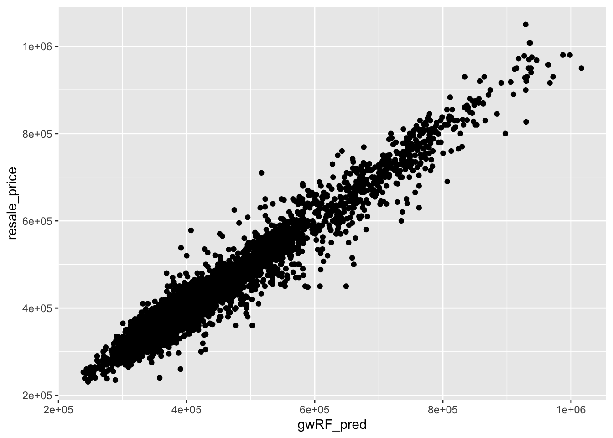

pacman::p_load(sf, spdep, GWmodel, SpatialML, tmap, rsample, Metrics, tidyverse)HX11: Geographically Weighted Predictive Models
Hands-On Exercise 11
HX11.1 Overview
Predictive modelling uses statistical learning or machine learning techniques to predict outcomes. Geospatial predictive modelling attempts to describe the impact of geospatial factors, such as infrastructure, socio-cultural and topographic factors, that influence where events occur.
HX11.2 The Data
Today we will be analysing the effect of geospatial factors on HDB resale prices in Singapore. The data we will use is as follows:
Aspatial dataset:
- HDB Resale data: a list of HDB resale transacted prices in Singapore from Jan 2017 onwards. It is in csv format which can be downloaded from Data.gov.sg.
Geospatial dataset:
- MP14_SUBZONE_WEB_PL: a polygon feature data providing information of URA 2014 Master Plan Planning Subzone boundary data. It is in ESRI shapefile format. This data set was also downloaded from Data.gov.sg
Locational factors with geographic coordinates:
Downloaded from Data.gov.sg.
Eldercare data is a list of eldercare in Singapore. It is in shapefile format.
Hawker Centre data is a list of hawker centres in Singapore. It is in geojson format.
Parks data is a list of parks in Singapore. It is in geojson format.
Supermarket data is a list of supermarkets in Singapore. It is in geojson format.
CHAS clinics data is a list of CHAS clinics in Singapore. It is in geojson format.
Childcare service data is a list of childcare services in Singapore. It is in geojson format.
Kindergartens data is a list of kindergartens in Singapore. It is in geojson format.
Downloaded from Datamall.lta.gov.sg.
MRT data is a list of MRT/LRT stations in Singapore with the station names and codes. It is in shapefile format.
Bus stops data is a list of bus stops in Singapore. It is in shapefile format.
Locational factors without geographic coordinates:
Downloaded from Data.gov.sg.
- Primary school data is extracted from the list on General information of schools from data.gov portal. It is in csv format.
Retrieved/Scraped from other sources
CBD coordinates obtained from Google.
Shopping malls data is a list of Shopping malls in Singapore obtained from Wikipedia.
Good primary schools is a list of primary schools that are ordered in ranking in terms of popularity and this can be found at Local Salary Forum.
HX11.3 Installing and loading R packages and data
Today’s data is already cleaned and saved as an RDS file, so we can simply read it using this code chunk.
mdata <- read_rds("data/rds/mdata.rds")HX11.4 Data Sampling
HX11.4.1 Train-test-split
As with any machine learning task, we should split our data into training and testing sets. We will create a training set from 65% of our data and designate the remainder as our testing set.
set.seed(1234)
resale_split <- initial_split(mdata, prop = 6.5/10,)
train_data <- training(resale_split)
test_data <- testing(resale_split)HX11.4.2 Correlational analysis
As always, we create a correlation matrix to examine for signs of multicollinearity.
mdata_nogeo <- mdata %>%
st_drop_geometry()
corrplot::corrplot(cor(mdata_nogeo[, 2:17]),
diag = FALSE,
order = "AOE",
tl.pos = "td",
tl.cex = 0.5,
method = "number",
type = "upper")
HX11.4.3 Non-spatial multiple linear regression
price_mlr <- lm(resale_price ~ floor_area_sqm +
storey_order + remaining_lease_mths +
PROX_CBD + PROX_ELDERLYCARE + PROX_HAWKER +
PROX_MRT + PROX_PARK + PROX_MALL +
PROX_SUPERMARKET + WITHIN_350M_KINDERGARTEN +
WITHIN_350M_CHILDCARE + WITHIN_350M_BUS +
WITHIN_1KM_PRISCH,
data=train_data)
write_rds(price_mlr, "data/rds/price_mlr.rds")
summary(price_mlr)
Call:
lm(formula = resale_price ~ floor_area_sqm + storey_order + remaining_lease_mths +
PROX_CBD + PROX_ELDERLYCARE + PROX_HAWKER + PROX_MRT + PROX_PARK +
PROX_MALL + PROX_SUPERMARKET + WITHIN_350M_KINDERGARTEN +
WITHIN_350M_CHILDCARE + WITHIN_350M_BUS + WITHIN_1KM_PRISCH,
data = train_data)
Residuals:
Min 1Q Median 3Q Max
-205193 -39120 -1930 36545 472355
Coefficients:
Estimate Std. Error t value Pr(>|t|)
(Intercept) 107601.073 10601.261 10.150 < 2e-16 ***
floor_area_sqm 2780.698 90.579 30.699 < 2e-16 ***
storey_order 14299.298 339.115 42.167 < 2e-16 ***
remaining_lease_mths 344.490 4.592 75.027 < 2e-16 ***
PROX_CBD -16930.196 201.254 -84.124 < 2e-16 ***
PROX_ELDERLYCARE -14441.025 994.867 -14.516 < 2e-16 ***
PROX_HAWKER -19265.648 1273.597 -15.127 < 2e-16 ***
PROX_MRT -32564.272 1744.232 -18.670 < 2e-16 ***
PROX_PARK -5712.625 1483.885 -3.850 0.000119 ***
PROX_MALL -14717.388 2007.818 -7.330 2.47e-13 ***
PROX_SUPERMARKET -26881.938 4189.624 -6.416 1.46e-10 ***
WITHIN_350M_KINDERGARTEN 8520.472 632.812 13.464 < 2e-16 ***
WITHIN_350M_CHILDCARE -4510.650 354.015 -12.741 < 2e-16 ***
WITHIN_350M_BUS 813.493 222.574 3.655 0.000259 ***
WITHIN_1KM_PRISCH -8010.834 491.512 -16.298 < 2e-16 ***
---
Signif. codes: 0 '***' 0.001 '**' 0.01 '*' 0.05 '.' 0.1 ' ' 1
Residual standard error: 61650 on 10320 degrees of freedom
Multiple R-squared: 0.7373, Adjusted R-squared: 0.737
F-statistic: 2069 on 14 and 10320 DF, p-value: < 2.2e-16HX11.5 Geographically weighted regression with gwr
The model we’ve just built is a simple multiple linear regression model taking in proximity distances as explicitly-defined features. In this section, a GWmodel will be created using the GWmodel package.
HX11.5.1 Converting to SpatialPointDataFrame
train_data_sp <- as_Spatial(train_data)
train_data_spclass : SpatialPointsDataFrame
features : 10335
extent : 11597.31, 42623.63, 28217.39, 48741.06 (xmin, xmax, ymin, ymax)
crs : +proj=tmerc +lat_0=1.36666666666667 +lon_0=103.833333333333 +k=1 +x_0=28001.642 +y_0=38744.572 +ellps=WGS84 +towgs84=0,0,0,0,0,0,0 +units=m +no_defs
variables : 17
names : resale_price, floor_area_sqm, storey_order, remaining_lease_mths, PROX_CBD, PROX_ELDERLYCARE, PROX_HAWKER, PROX_MRT, PROX_PARK, PROX_GOOD_PRISCH, PROX_MALL, PROX_CHAS, PROX_SUPERMARKET, WITHIN_350M_KINDERGARTEN, WITHIN_350M_CHILDCARE, ...
min values : 218000, 74, 1, 555, 0.999393538715878, 1.98943787433087e-08, 0.0333358643817954, 0.0220407324774434, 0.0441643212802781, 0.0652540365486641, 0, 6.20621206270077e-09, 1.21715176356525e-07, 0, 0, ...
max values : 1186888, 133, 17, 1164, 19.6500691667807, 3.30163731686804, 2.86763031236184, 2.13060636038504, 2.41313695915468, 10.6223726149914, 2.27100643784442, 0.808332738794272, 1.57131703651196, 7, 20, ... HX11.5.2 Computing adaptive bandwidth
Next, we will determine the optimal bandwidth with bw.gwr() and the CV method.
bw_adaptive <- bw.gwr(resale_price ~ floor_area_sqm +
storey_order + remaining_lease_mths +
PROX_CBD + PROX_ELDERLYCARE + PROX_HAWKER +
PROX_MRT + PROX_PARK + PROX_MALL +
PROX_SUPERMARKET + WITHIN_350M_KINDERGARTEN +
WITHIN_350M_CHILDCARE + WITHIN_350M_BUS +
WITHIN_1KM_PRISCH,
data=train_data_sp,
approach="CV",
kernel="gaussian",
adaptive=TRUE,
longlat=FALSE)Take a cup of tea and have a break, it will take a few minutes.
-----A kind suggestion from GWmodel development group
Adaptive bandwidth: 6395 CV score: 3.60536e+13
Adaptive bandwidth: 3960 CV score: 3.320316e+13
Adaptive bandwidth: 2455 CV score: 2.928339e+13
Adaptive bandwidth: 1524 CV score: 2.550957e+13
Adaptive bandwidth: 950 CV score: 1.95632e+13
Adaptive bandwidth: 593 CV score: 1.58347e+13
Adaptive bandwidth: 375 CV score: 1.310042e+13
Adaptive bandwidth: 237 CV score: 1.113152e+13
Adaptive bandwidth: 155 CV score: 9.572037e+12
Adaptive bandwidth: 101 CV score: 8.457003e+12
Adaptive bandwidth: 71 CV score: 7.605058e+12
Adaptive bandwidth: 49 CV score: 6.965752e+12
Adaptive bandwidth: 38 CV score: 8.249935e+12
Adaptive bandwidth: 58 CV score: 7.275234e+12
Adaptive bandwidth: 45 CV score: 6.871439e+12
Adaptive bandwidth: 41 CV score: 6.7928e+12
Adaptive bandwidth: 40 CV score: 6.780447e+12
Adaptive bandwidth: 38 CV score: 8.249935e+12
Adaptive bandwidth: 40 CV score: 6.780447e+12 The optimum number of neighbour points for adaptive bandwidth is 40.
write_rds(bw_adaptive, "data/rds/bw_adaptive.rds")HX11.5.3 Constructing adaptive bandwdith GWR model
We can now go ahead and calibrate the adaptive-bandwidth GWR hedonic pricing model with Gaussian kernel.
gwr_adaptive <- gwr.basic(formula = resale_price ~
floor_area_sqm + storey_order +
remaining_lease_mths + PROX_CBD +
PROX_ELDERLYCARE + PROX_HAWKER +
PROX_MRT + PROX_PARK + PROX_MALL +
PROX_SUPERMARKET + WITHIN_350M_KINDERGARTEN +
WITHIN_350M_CHILDCARE + WITHIN_350M_BUS +
WITHIN_1KM_PRISCH,
data=train_data_sp,
bw=bw_adaptive,
kernel = 'gaussian',
adaptive=TRUE,
longlat = FALSE)
write_rds(gwr_adaptive, "data/rds/model/gwr_adaptive.rds")
gwr_adaptive ***********************************************************************
* Package GWmodel *
***********************************************************************
Program starts at: 2024-11-09 19:08:37.425373
Call:
gwr.basic(formula = resale_price ~ floor_area_sqm + storey_order +
remaining_lease_mths + PROX_CBD + PROX_ELDERLYCARE + PROX_HAWKER +
PROX_MRT + PROX_PARK + PROX_MALL + PROX_SUPERMARKET + WITHIN_350M_KINDERGARTEN +
WITHIN_350M_CHILDCARE + WITHIN_350M_BUS + WITHIN_1KM_PRISCH,
data = train_data_sp, bw = bw_adaptive, kernel = "gaussian",
adaptive = TRUE, longlat = FALSE)
Dependent (y) variable: resale_price
Independent variables: floor_area_sqm storey_order remaining_lease_mths PROX_CBD PROX_ELDERLYCARE PROX_HAWKER PROX_MRT PROX_PARK PROX_MALL PROX_SUPERMARKET WITHIN_350M_KINDERGARTEN WITHIN_350M_CHILDCARE WITHIN_350M_BUS WITHIN_1KM_PRISCH
Number of data points: 10335
***********************************************************************
* Results of Global Regression *
***********************************************************************
Call:
lm(formula = formula, data = data)
Residuals:
Min 1Q Median 3Q Max
-205193 -39120 -1930 36545 472355
Coefficients:
Estimate Std. Error t value Pr(>|t|)
(Intercept) 107601.073 10601.261 10.150 < 2e-16 ***
floor_area_sqm 2780.698 90.579 30.699 < 2e-16 ***
storey_order 14299.298 339.115 42.167 < 2e-16 ***
remaining_lease_mths 344.490 4.592 75.027 < 2e-16 ***
PROX_CBD -16930.196 201.254 -84.124 < 2e-16 ***
PROX_ELDERLYCARE -14441.025 994.867 -14.516 < 2e-16 ***
PROX_HAWKER -19265.648 1273.597 -15.127 < 2e-16 ***
PROX_MRT -32564.272 1744.232 -18.670 < 2e-16 ***
PROX_PARK -5712.625 1483.885 -3.850 0.000119 ***
PROX_MALL -14717.388 2007.818 -7.330 2.47e-13 ***
PROX_SUPERMARKET -26881.938 4189.624 -6.416 1.46e-10 ***
WITHIN_350M_KINDERGARTEN 8520.472 632.812 13.464 < 2e-16 ***
WITHIN_350M_CHILDCARE -4510.650 354.015 -12.741 < 2e-16 ***
WITHIN_350M_BUS 813.493 222.574 3.655 0.000259 ***
WITHIN_1KM_PRISCH -8010.834 491.512 -16.298 < 2e-16 ***
---Significance stars
Signif. codes: 0 '***' 0.001 '**' 0.01 '*' 0.05 '.' 0.1 ' ' 1
Residual standard error: 61650 on 10320 degrees of freedom
Multiple R-squared: 0.7373
Adjusted R-squared: 0.737
F-statistic: 2069 on 14 and 10320 DF, p-value: < 2.2e-16
***Extra Diagnostic information
Residual sum of squares: 3.922202e+13
Sigma(hat): 61610.08
AIC: 257320.2
AICc: 257320.3
BIC: 247249
***********************************************************************
* Results of Geographically Weighted Regression *
***********************************************************************
*********************Model calibration information*********************
Kernel function: gaussian
Adaptive bandwidth: 40 (number of nearest neighbours)
Regression points: the same locations as observations are used.
Distance metric: Euclidean distance metric is used.
****************Summary of GWR coefficient estimates:******************
Min. 1st Qu. Median 3rd Qu.
Intercept -3.2478e+08 -4.7727e+05 -8.3004e+03 5.5025e+05
floor_area_sqm -2.8714e+04 1.4475e+03 2.3011e+03 3.3900e+03
storey_order 3.3186e+03 8.5899e+03 1.0826e+04 1.3397e+04
remaining_lease_mths -1.4431e+03 2.6063e+02 3.9048e+02 5.2865e+02
PROX_CBD -1.0837e+07 -5.7697e+04 -1.3787e+04 2.6552e+04
PROX_ELDERLYCARE -3.2195e+07 -4.0643e+04 1.0562e+04 6.1054e+04
PROX_HAWKER -2.3985e+08 -5.1365e+04 3.0026e+03 6.4287e+04
PROX_MRT -1.1632e+07 -1.0488e+05 -4.9373e+04 5.1037e+03
PROX_PARK -6.5961e+06 -4.8671e+04 -8.8128e+02 5.3498e+04
PROX_MALL -1.8112e+07 -7.4238e+04 -1.3982e+04 4.9779e+04
PROX_SUPERMARKET -4.5761e+06 -6.3461e+04 -1.7429e+04 3.5616e+04
WITHIN_350M_KINDERGARTEN -4.1823e+05 -6.0040e+03 9.0209e+01 4.7127e+03
WITHIN_350M_CHILDCARE -1.0273e+05 -2.2375e+03 2.6668e+02 2.6388e+03
WITHIN_350M_BUS -1.1757e+05 -1.4719e+03 1.1626e+02 1.7584e+03
WITHIN_1KM_PRISCH -6.6465e+05 -5.5959e+03 2.6916e+02 5.7500e+03
Max.
Intercept 1.6493e+08
floor_area_sqm 5.0907e+04
storey_order 2.9537e+04
remaining_lease_mths 1.8119e+03
PROX_CBD 2.2411e+07
PROX_ELDERLYCARE 8.2444e+07
PROX_HAWKER 5.9654e+06
PROX_MRT 2.0189e+08
PROX_PARK 1.5188e+07
PROX_MALL 1.0443e+07
PROX_SUPERMARKET 3.8330e+06
WITHIN_350M_KINDERGARTEN 6.6799e+05
WITHIN_350M_CHILDCARE 1.0802e+05
WITHIN_350M_BUS 3.7313e+04
WITHIN_1KM_PRISCH 5.0231e+05
************************Diagnostic information*************************
Number of data points: 10335
Effective number of parameters (2trace(S) - trace(S'S)): 1730.101
Effective degrees of freedom (n-2trace(S) + trace(S'S)): 8604.899
AICc (GWR book, Fotheringham, et al. 2002, p. 61, eq 2.33): 238871.9
AIC (GWR book, Fotheringham, et al. 2002,GWR p. 96, eq. 4.22): 237036.9
BIC (GWR book, Fotheringham, et al. 2002,GWR p. 61, eq. 2.34): 238209.1
Residual sum of squares: 4.829191e+12
R-square value: 0.967657
Adjusted R-square value: 0.9611534
***********************************************************************
Program stops at: 2024-11-09 19:09:58.907612 HX11.6 Evaluating our model
Every machine learning model should be quantitatively evaluated. To do the same for our GWR model, we first convert our testing data to a SpatialPointDataFrame.
test_data_sp <- test_data %>%
as_Spatial()
test_data_spHX11.6.1 Computing adaptive bandwidth for test data
gwr_bw_test_adaptive <- bw.gwr(resale_price ~ floor_area_sqm +
storey_order + remaining_lease_mths +
PROX_CBD + PROX_ELDERLYCARE + PROX_HAWKER +
PROX_MRT + PROX_PARK + PROX_MALL +
PROX_SUPERMARKET + WITHIN_350M_KINDERGARTEN +
WITHIN_350M_CHILDCARE + WITHIN_350M_BUS +
WITHIN_1KM_PRISCH,
data=test_data_sp,
approach="CV",
kernel="gaussian",
adaptive=TRUE,
longlat=FALSE)HX11.6.2 Computing predicted values
gwr_pred <- gwr.predict(formula = resale_price ~
floor_area_sqm + storey_order +
remaining_lease_mths + PROX_CBD +
PROX_ELDERLYCARE + PROX_HAWKER +
PROX_MRT + PROX_PARK + PROX_MALL +
PROX_SUPERMARKET + WITHIN_350M_KINDERGARTEN +
WITHIN_350M_CHILDCARE + WITHIN_350M_BUS +
WITHIN_1KM_PRISCH,
data=train_data_sp,
predictdata = test_data_sp,
bw=bw_adaptive,
kernel = 'gaussian',
adaptive=TRUE,
longlat = FALSE)HX11.7 Random Forest model
A random forest (RF) model aggregates the result of multiple decision trees (e.g. 100 of them), making it less prone to overfitting. It can be adapted for regression use.
In this section, we will build a random forest model to predict HDB resale prices in R. The package to be used is the ranger package.
HX11.7.1 Prepare coordinates
The code chunk below extracts the coordinates of the training and test datasets. After that, we drop the geoetry column with st_drop_geometry().
coords <- st_coordinates(mdata)
coords_train <- st_coordinates(train_data)
coords_test <- st_coordinates(test_data)
train_data <- train_data %>%
st_drop_geometry()
coords_train <- write_rds(coords_train, "data/rds/model/coords_train.rds" )
coords_test <- write_rds(coords_test, "data/rds/model/coords_test.rds" )set.seed(1234)
rf <- ranger(resale_price ~ floor_area_sqm + storey_order +
remaining_lease_mths + PROX_CBD + PROX_ELDERLYCARE +
PROX_HAWKER + PROX_MRT + PROX_PARK + PROX_MALL +
PROX_SUPERMARKET + WITHIN_350M_KINDERGARTEN +
WITHIN_350M_CHILDCARE + WITHIN_350M_BUS +
WITHIN_1KM_PRISCH,
data=train_data)
write_rds(rf, "data/rds/model/rf.rds")
rfRanger result
Call:
ranger(resale_price ~ floor_area_sqm + storey_order + remaining_lease_mths + PROX_CBD + PROX_ELDERLYCARE + PROX_HAWKER + PROX_MRT + PROX_PARK + PROX_MALL + PROX_SUPERMARKET + WITHIN_350M_KINDERGARTEN + WITHIN_350M_CHILDCARE + WITHIN_350M_BUS + WITHIN_1KM_PRISCH, data = train_data)
Type: Regression
Number of trees: 500
Sample size: 10335
Number of independent variables: 14
Mtry: 3
Target node size: 5
Variable importance mode: none
Splitrule: variance
OOB prediction error (MSE): 731404460
R squared (OOB): 0.9493789 HX11.8 Geographical Random Forest model
In this section, we will calibrate a geographical RF model using grf() from the SpatialML package.
HX11.8.1 Calibrating using training data
set.seed(1234)
gwRF_adaptive <- grf(formula = resale_price ~ floor_area_sqm + storey_order +
remaining_lease_mths + PROX_CBD + PROX_ELDERLYCARE +
PROX_HAWKER + PROX_MRT + PROX_PARK + PROX_MALL +
PROX_SUPERMARKET + WITHIN_350M_KINDERGARTEN +
WITHIN_350M_CHILDCARE + WITHIN_350M_BUS +
WITHIN_1KM_PRISCH,
dframe=train_data,
bw=55,
kernel="adaptive",
coords=coords_train)
Number of Observations: 10335Number of Independent Variables: 14Kernel: Adaptive
Neightbours: 55
--------------- Global ML Model Summary ---------------Ranger result
Call:
ranger(resale_price ~ floor_area_sqm + storey_order + remaining_lease_mths + PROX_CBD + PROX_ELDERLYCARE + PROX_HAWKER + PROX_MRT + PROX_PARK + PROX_MALL + PROX_SUPERMARKET + WITHIN_350M_KINDERGARTEN + WITHIN_350M_CHILDCARE + WITHIN_350M_BUS + WITHIN_1KM_PRISCH, data = train_data, num.trees = 500, mtry = 4, importance = "impurity", num.threads = NULL)
Type: Regression
Number of trees: 500
Sample size: 10335
Number of independent variables: 14
Mtry: 4
Target node size: 5
Variable importance mode: impurity
Splitrule: variance
OOB prediction error (MSE): 697593819
R squared (OOB): 0.9517189
Importance: floor_area_sqm storey_order remaining_lease_mths
7.413197e+12 1.538950e+13 2.890637e+13
PROX_CBD PROX_ELDERLYCARE PROX_HAWKER
5.310066e+13 7.285092e+12 5.568548e+12
PROX_MRT PROX_PARK PROX_MALL
7.369745e+12 4.894344e+12 4.223286e+12
PROX_SUPERMARKET WITHIN_350M_KINDERGARTEN WITHIN_350M_CHILDCARE
2.793853e+12 1.018586e+12 1.710374e+12
WITHIN_350M_BUS WITHIN_1KM_PRISCH
1.589501e+12 6.794634e+12
Mean Square Error (Not OOB): 173951416.766R-squared (Not OOB) %: 98.796AIC (Not OOB): 196129.252AICc (Not OOB): 196129.299
--------------- Local Model Summary ---------------
Residuals OOB: Min. 1st Qu. Median Mean 3rd Qu. Max.
-236112.0 -13033.7 444.4 593.8 14831.5 358041.7
Residuals Predicted (Not OOB): Min. 1st Qu. Median Mean 3rd Qu. Max.
-79279.83 -3510.70 54.56 50.98 3909.85 83074.08
Local Variable Importance: Min Max Mean StD
floor_area_sqm 0 401562922035 18210850992 41426270899
storey_order 302736445 243728744368 16368419468 23620589843
remaining_lease_mths 696564138 546463600727 34119912443 70328183398
PROX_CBD 55173040 382484896335 12154563393 29293290548
PROX_ELDERLYCARE 45182031 344081962746 10597657883 24546405941
PROX_HAWKER 43516026 342597797419 10551807020 23408387903
PROX_MRT 54234551 299075025906 9873129985 21055852211
PROX_PARK 49919822 322633843469 9353956995 19517077658
PROX_MALL 43296133 433263607933 11247374493 27537334970
PROX_SUPERMARKET 52665827 417310417234 10802122271 26572460731
WITHIN_350M_KINDERGARTEN 0 186468064682 2848177740 12928886968
WITHIN_350M_CHILDCARE 0 255236737234 5526292324 18109971102
WITHIN_350M_BUS 0 193828795378 4747552546 11886064288
WITHIN_1KM_PRISCH 0 178360608427 1778262602 7163381668
Mean squared error (OOB): 930426169.333R-squared (OOB) %: 93.56AIC (OOB): 213459.669AICc (OOB): 213459.716Mean squared error Predicted (Not OOB): 73859413.696R-squared Predicted (Not OOB) %: 99.489AIC Predicted (Not OOB): 187276.161AICc Predicted (Not OOB): 187276.208
Calculation time (in seconds): 5.6057write_rds(gwRF_adaptive, "data/rds/model/gwRF_adaptive.rds")HX11.8.2 Predicting using test data
HX11.8.2.1 Preparing test data
The code chunk below will be used to combine the test data with its corresponding coordinates data
test_data <- cbind(test_data, coords_test) %>%
st_drop_geometry()HX11.8.2.2 Predicting using test data
Next, we use predict.grf() from SpatialML to derive our predicted values with our gwRF adaptive model.
gwRF_pred <- predict.grf(gwRF_adaptive,
test_data,
x.var.name="X",
y.var.name="Y",
local.w=1,
global.w=0)
write_rds(gwRF_pred, "data/rds/model/GRF_pred.rds")HX11.8.2.3 Converting predicted output into data frame
As the output of predict.grf() is a vector, it is wiser to convert it to a data frame for further visualisation and analysis.
gwRF_pred_df <- as.data.frame(gwRF_pred)
# cbind to test data
test_data_p <- cbind(test_data, gwRF_pred_df)
write_rds(test_data_p, "data/rds/model/test_data_p.rds")HX11.8.3 Evaluating our model
As with any regression task, we use root mean square error (RMSE) to evaluate our model. RMSE measures how far predicted values are from observed values in regression analysis. In the code chunk below, rmse() of Metrics is used to compute RMSE.
rmse(test_data_p$resale_price,
test_data_p$gwRF_pred)[1] 27302.9HX11.8.4 Visualising our predicted values
We can also use a scatterplot to visualie our actual and predicted resale prices.
ggplot(data = test_data_p,
aes(x = gwRF_pred,
y = resale_price)) +
geom_point()
References
- Kam, T. S. (2024). 14 Geographically Weighted Predictive Models. R for Geospatial Data Science and Analytics. https://r4gdsa.netlify.app/chap14.html